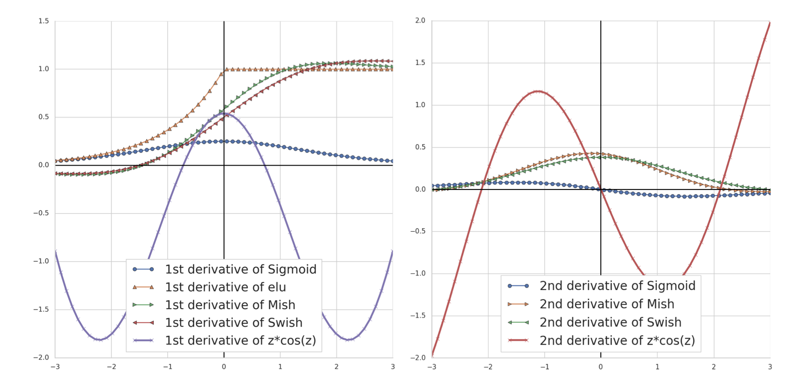
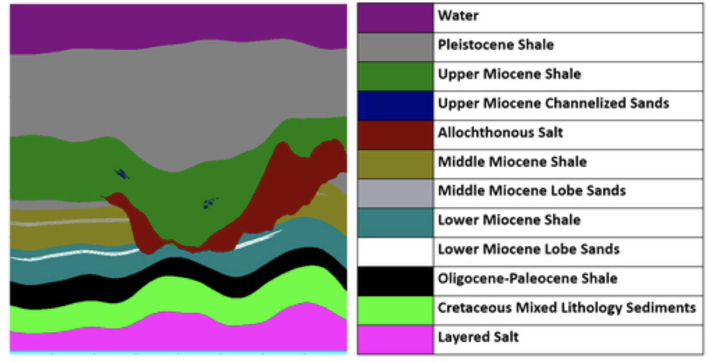
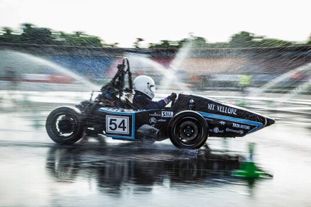
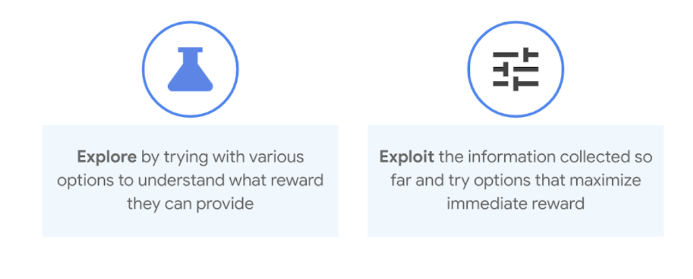
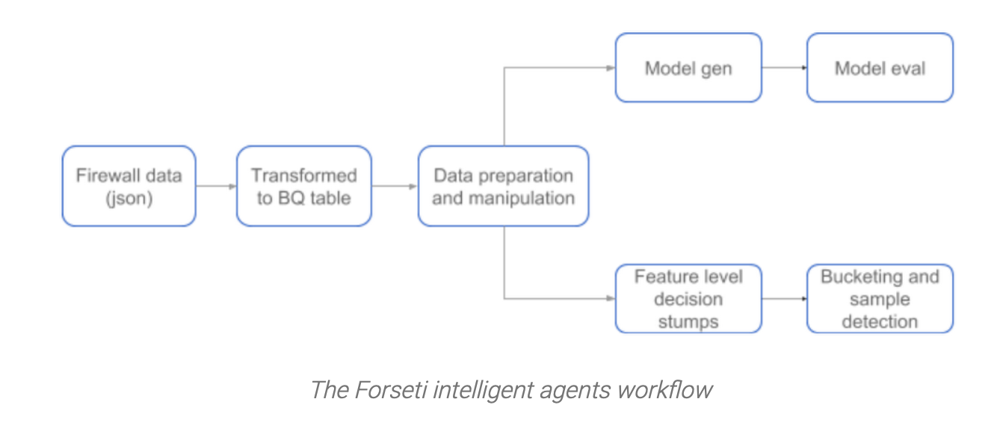
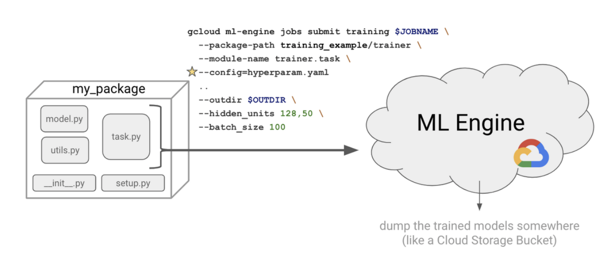
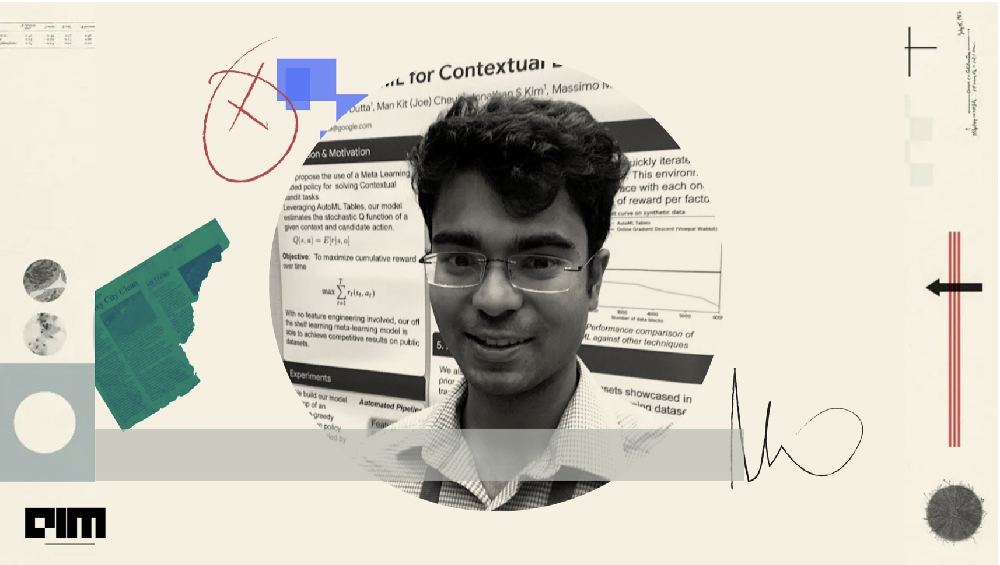

Hi, I'm Praneet!
I’m a Senior Research Engineer @ Google DeepMind, working on bringing the benefits of AI to the world. Prior to this I was @ Google Cloud, partnering with Fortune 500 organizations in leveraging Cloud AI tools for their industries.
My goal is to optimize the quality of human life making it sustainable for the long term future. Specifically, I’m personally interested in some of the broader challenges of the 21st century. These include related to climate change, urban pollution monitoring and control, Augmented reality based skill development. I volunteer as an AI advisor for non-profit’s on how we can address these challenges.
I enjoy the intersection of AI and art, and have been dabbling on using GAN’s to generate themes of popular works in the field.
In my free time, catch me playing the percussion, learning how to fly a Cessna 152 and Curling on the ice .
Linkedin | Github | Twitter | Google Research | DeepMind
Publications
Selection of some of my Applied AI work

Semi-analytical Industrial Cooling System Model for Reinforcement Learning

Game Plan: What AI can do for Football, and What Football can do for AI
Growing Cosine Unit: A Novel Oscillatory Activation Function That Can Speedup Training and Reduce Parameters in Convolutional Neural Networks
Biologically Inspired Oscillating Activation Functions Can Bridge the Performance Gap between Biological and Artificial Neurons

3D Conditional Generative Adversarial Networks to enable large-scale seismic image enhancement

Applying regression models to calculate the Q factor of multiplexed video signal based on Optisystem
Engine performance optimization using machine learning techniques

Articles
A few of my technical articles featured on various platforms
Autocar India: Autonomous vehicles and the road ahead
Better bandit building: Advanced personalization the easy way with AutoML Tables


Forseti intelligent agents: an open-source anomaly detection module


Deep reinforcement learning on GCP

Media
Interviews and media coverage on my journey & work.
Inside Praneet’s Machine Learning Journey from Vellore to Google DeepMind

Introducing Unity ML Agent: Praneet Dutta research internship project
Working Towards Landing Your First AI Job | Ep. 31 Praneet Dutta
Using AI For Social Good with Praneet Dutta
Using AI For Social Good with Praneet Dutta
DeepMind Wants to Use AI to Transform Soccer
AI has the power to take soccer to the next level. https://t.co/bJuQ5zOddu
— WIRED (@WIRED) December 6, 2021
How #I and Simulations can be used to make industrial facilities more efficient
Council for Good member @praneetdutta has published his work, "Semi-analytical Industrial Cooling System Model for Reinforcement Learning" studying how #AI and Simulations can be used to make industrial facilities more efficient. Learn more: https://t.co/Mu01UzKicF pic.twitter.com/qD7NUNGfpP
— AI4Good (@AI4Good) August 10, 2022
Community Work
Technical Program Commitee: NeurIPS(2020-Present); ICML(2020-Present); ICLR(2020-Present); AutoML conference; IEEE Mechatronics Journals; Springer AI Journals
Organizing Commitee: AI for Sports Analytics Workshop; ICJAI 2021 AI Task Force Commitee Member; Confederation of Indian Industry; 2021-Present AI Task Force Commitee Member; Council for Good, AI for Good; Ai4 Leadership Council
Awards
Vellore Institue of Technology Distinguished Alumni Awards 2022 Distinguished Alumni Award /
MLDS conference 40 under 40 Data Scientist Award 2022 40 under 40 Honorees /
Institute of Engineering and Technology Youth Engineering Icon Award 2022 Youth Engineering Icon Award /
Other kind of Fun Stuff
Things that help me take a break:)
Flying Student: Private Pilot License
I've been taking advatange of the Gorgeous Bay Area weather to finally get hands on in Aviation. A Sunset Landing at Palo Alto from San Jose International airport is captured above.
Curling on the Ice
Please reach out if you want to get involved! We are a group of Curlers in the Bay Area, looking to grow the community.